Yun-Sheng Chang (yschang@mit.edu)
Subtheme: Exploring speculative investment (“flipped properties”)
The dataset used in this analysis includes all residential sales transactions in the City of Boston between 2000-2023. It consists of 63 columns and 49301 rows. Important columns to this analysis include sale date, sale price, sale price difference between consecutive transactions in percentage, indicator for flipped properties, flip horizon, property type, value investor type.
Some of the transactions has unreasonable/artificial price such as 1 and 999999999. Thus we remove them from the dataset, and end up with 49120 rows. There are some other data issues found in the dataset, for instance, unreasonable high price percentage difference and negative flip horizons. We discuss those issues and how we tackle them in the section relevant to them.
(Credit: The Warren Group)
To understand housing activity in the City of Boston between 2000-2023, we begin with decomposing all the transactions by their property type, and plot the housing price trends (i.e., mean price over sale date in year) for the top-two popular property types as well as the overall trend.
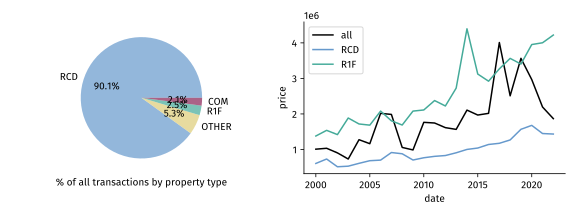
Figure 1. In the City of Boston, the main properties being traded are condos (more than 90%), followed by, but with a significant gap, single-family homes. This is quite different from the Homes for Profit reading where the analysis is done on the Greater Boston residential area (53.9% for single-family homes and 33% for condos). The overall housing price had been increasing over the years until 2017, and since then the price seems to be decreasing. In contrast, the prices of both single-family homes and condos has been consistently increasing, with single-family homes enjoying a sharper increase.
To understand the “hotness” of the housing market, we plot the number of all transactions and transactions involving flipped properties over years.
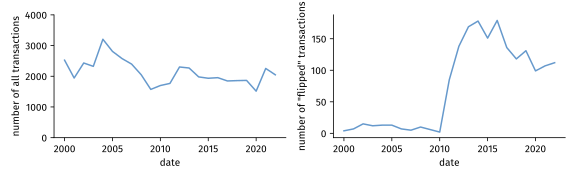
Figure 2. The overall housing activity seems relatively stable over years, whereas the number of “flipping” spike during the years of 2011-2014, and, despite experiencing a gradual drop since 2015, remains high compared to years before 2011. These figures indicate that flipping has become more or less a common practice in the housing market.
To investigate further on flipping, we again decompose the transactions, but this time only those that involve “flipped” properties, by their property type. We then compare the result with the overall activity.
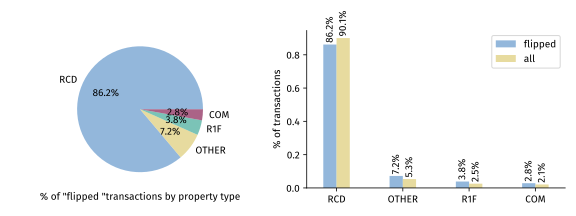
Figure 3. The percentages of flipping generally follows that of the overall activity, with condo on the top with a proportion of 86.2%, and followed by single-family homes 3.8%. However, the slightly lower ratio in condos and higher in single-family homes compared to the overall activity might be explained by the fact that the latter has been experiencing a steeper slope in price growth over the years than the former, as demonstrated in Figure 1.
To learn about how “fast” properties are being flipped, we plot the flipping horizon, defined as the time elapsed between buying and selling the flipped property, for condos and single-family homes, respectively. We follow the definition in the metadata that refers to a flipping horizon less than six months as “short-term”, between six months to a year as “medium-term”, and between one to two years as “long-term”.
During plotting, we found that some transactions have negative horizons. Removing them reduces the number of transaction analyzed in this section from 1462 to 1440.
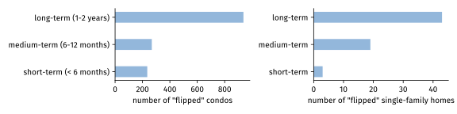
Figure 4. For both flipped condos and single-family homes, long-term horizons are the most common choice. Condos have similar numbers of short-term and medium-term flipping, whereas single-family homes are more likely to be flipped medium-term than short-term.
Next we dive into the housing price of flipped properties. At first we tried to analyze all the transactions of interest as a whole, but soon found it difficult to do so because of the huge discrepancy in the price of properties. We therefore categorized the properties based on their price: properties of price < $400K belong to the low-priced tier, $400K-1M the medium-priced tier, $1M-100M the high-priced tier. We also observed extremely high-priced (> $100M) properties that seem to be unrelated to this analysis. Excluding them reduces the total number of transactions by 92 and flipped transactions by 1.
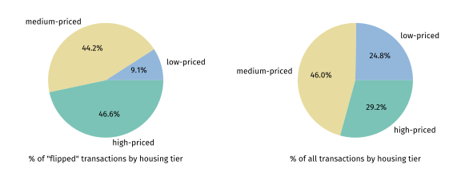
Figure 5. Flipped transactions have a medium-priced ratio similar to that of overall transactions. However, flipped transactions, in proportion, involves less low-priced properties (flipped 9.1% vs. overall 24.8%) and more high-priced ones (flipped 46.6% vs. overall 29.2%).
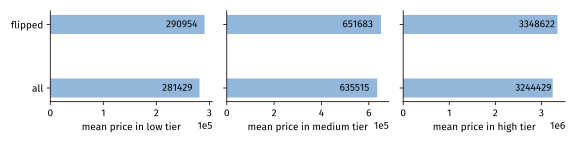
Figure 6. Within each tier, the mean price of flipped properties and that of all properties are close, but with the former being slightly higher than the latter across all tiers.
One reasonable hypothesis for the arise in flipping activity in the past decade is that flipping is profitable. But how profitable is it? We answer this question by first showing the distribution of “flipping” profit, in terms of the percentage change in the price of a property between consecutive transactions.
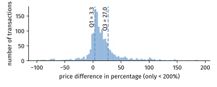
Figure 7. Most of the profits range from -7% (the 10th percentile) to 76.5% (the 90th percentile), with the 25th percentile = 3.3% and the 75th percentile = 27%.
To probe into more detail of the profitability of flipped properties, we analyze the profit within a greater granularity categorized by the flipping horizon and the property price. We plot the mean price change in percentage for each group.
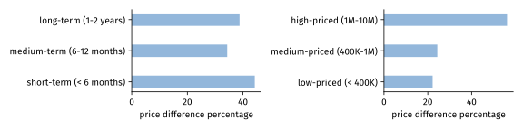
Figure 8. Short-term flipped properties seem to be slightly more profitable compared to the other two. This is particularly surprising as that means the rate of return (i.e., profit divided by time elapsed) is even higher. Moreover, the number (44% for at most 6 months) is remarkably high. As for the price groups, the difference between groups become even more apparent. High-priced properties achieve a 56% price increase on average, with medium-priced and low-priced 24% and 22%, respectively. This phenomenon might explain why a huge portion of flipped properties are high-priced, as shown in Figure 5.
Finally, we evaluate the investor activity by the number of transactions conducted by investors. We plot the percentages of transactions (overall and specific to the flipped ones, respectively) made by different kinds of investors, as well as their selling activity over time. Investors are categorized by the total purchase amount and the number of purchased properties in any five-year period. Detail can be found in the reading Homes for Profit.
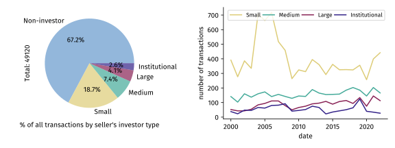
Figure 9. Overall, about 1/3 of properties are sold by investors. The number of transactions seems relatively stable, except for a brief rise around 2005-2007 before the Great Recession.
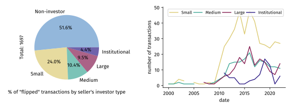
Figure 10. About half of the flipped properties are sold by investors; a ratio exceeds the overall average. Also, a growing trend in the number of transactions involving flipped properties starting around 2011 suggests that investors are becoming more engaged in flipping.
As mentioned in the Homes for Profit reading, investors conduct more cash sales than non-investors. To see if that’s also the case in this dataset, we plot the cash sale ratio over time in all transactions and then specialized to flipped properties.
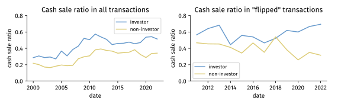
Figure 11. Overall, investors have consistently exhibited a higher cash sale ratio across years by a difference of 7-17%. This phenomenon becomes even more drastic when it comes to flipped properties: 69% of investors purchase properties to be flipped with cash, while only 32% of non-investors do so with cash.
In this analysis, we investigate the housing activity in the City of Boston between 2000-2023, with a focus on “flipping” properties. We found that flipping is indeed an active practice, especially for properties with a growing trend in price such as condos and single-family homes. Depending on many factors, including the property type, the flip horizon, and the housing price, flipping can yield quite different result. For instance, on average, flipping high-priced properties can be more than two times more profitable than lower-priced properties. Flipping can be extremely profitable. For instance, the average profit one makes by flipping a property after six months is 44%. Finally, investors with a large amount of cash are actively using this advantage to purchase properties of their interest, perhaps with the intention of flipping them rapidly.